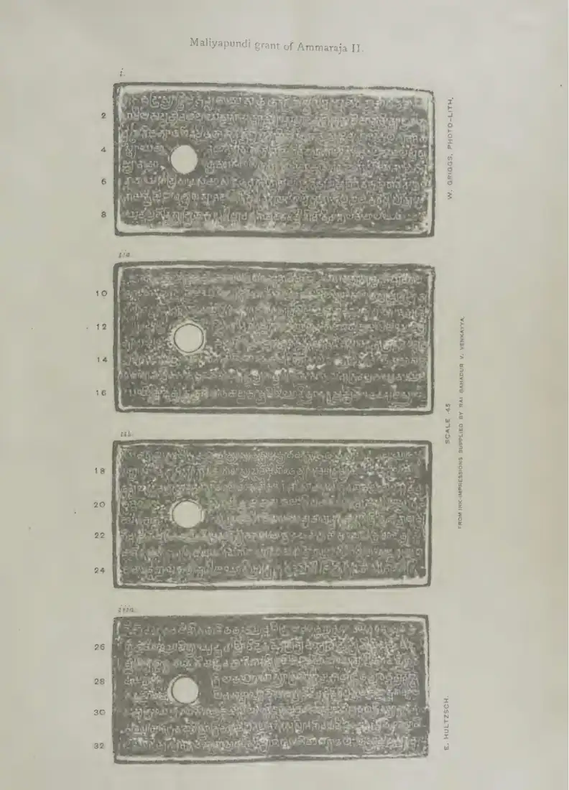
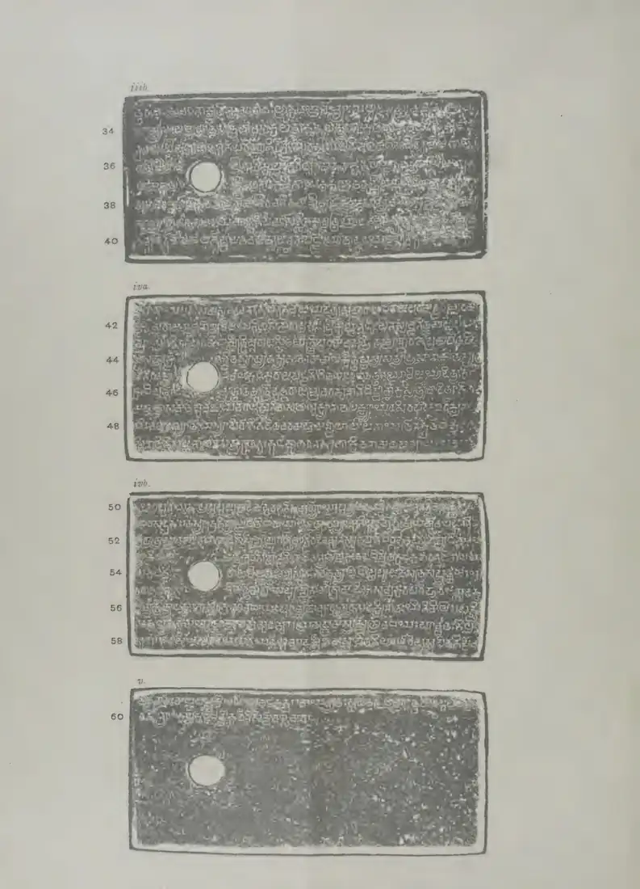

Maliyapûndi grant of Ammarâja II
MALIYAPUNDI GRANT OF AMMARAJA II.
BY PROFESSOR E. HULTZSCH, PH.D.; HALLE (SAALE).
This interesting record of the Eastern Chálukya dynasty was first published in 1905 by Messrs. A. Butterworth and V. Venugopal Chetti in their Nellore District Inscriptions, p. 164 ff., with seven photographic Plates. The original copper-plates had been "discovered by Mr. Venugopal Chetti in the Rámalingésvarasvámi temple at Madanúr, a village about 10 miles from Ongole, Nellore district." I re-edit the inscription from ink-impressions supplied by Rai Bahadur V. Venkayya, to whom the original plates were kindly forwarded at my request by Mr. Butterworth, and who contributes the following remarks on them :—
"These are five copper-plates, measuring 9" by about 4". The first and last plates bear writing only on their inner side and have raised rims about " high only on their engraved side. The three remaining plates, which bear writing on both sides, have rims of the same height projecting on both sides.2 Through holes (" in diameter), bored on the left margin of each plate, is passed a circular ring, which appears to have been cut and re-soldered before the plates came into my hands. The ring measures 5" in diameter and is a little more than " thick. Its ends, which are slightly thinner, are secured in the upper part of an expanded lotus flower of eight petals. To the lower part of the same lotus, which is fashioned into a rim-like projection, is soldered a circular seal, which measures 2" in diameter and is nearly " thick. It bears, in relief on a countersunk surface, the legend Śrí-Tribhuvanámku[śa] in the centre, in characters similar to those of the inscription. Below
1 These were probably killing (murder), theft, wrong action (adultery), slander, harsh language, untruthfulness, incoherent conversation, uncivility, atheism and perverse behaviour, enumerated as daśadhá pápakarma in the Śukrantti, adhyáya 3, slóka 6.
2 The high rims are responsible for the fact that some symbols at the beginning and the end of lines have not come out well in the ink-impressions.
the legend is an expanded lotus flower, and above it a running (?) boar facing the proper left. In front of the boar is an elephant goad, and behind its tail a crescent.”
The alphabet is of the same Telugu type as in other grants of the same dynasty and period. No distinction is made between secondary ô and au, and secondary î and û is often written as i and u. Final k occurs in line 32, t in ll. 8, 30 and 51, n in ll. 10, 18, 24, 37, 39, 52, and m in ll. 5, 7, 9, 11, 12, 51, 54, 55 and 60. The jihvámúliya is used in ll. 42, 51, and the upadhmániya in ll. 10, 41, 43, 46 and 51.
The following orthographical irregularities deserve to be noted. Against one of Pânini's rules (VIII. 4, 49) the sh of varsha is doubled in ll. 8 and 11, but not in ll. 13, 18, 25 and 40. Some spellings are due to the Telugu pronunciation. Thus we find yétad (l. 57) for étad, yuttara (ll. 54 f. and 57, but not in l. 59) for uttara, rakshapáyayiva (l. 47 f.) for rakshapáy=aiva, aruha (l. 50) for arha, krishṭa (l. 39) for krishṇa. Dental n is employed instead of lingual n in Kiranapuram and krishna (l. 43), punya (ll. 49, 50), ábharana (ll. 49, 53), ganéša (l. 50), yuttaráyana (l. 54 f.). The vowel ri is replaced by ri in krishna (l. 43), śadriśó (l. 52) and kritvá (l. 56). The palatal sibilant is improperly used in šaṅha (l. 50) for saṅghā and śadriśó (l. 52) for sadriśó.
The language is Sanskrit prose, interspersed with 20 Sanskrit verses. In ll. 56-60 some names of villages, tanks and fields appear in their Telugu forms. At the end of the record the usual imprecatory verses and the names of the Ájñaptī, composer and writer are missing.
As the inscription records a grant to a Jaina temple, it opens with an invocation of the Jaina religion (v. 1). Ll. 3-41 contain the genealogy of the Eastern Chálukya dynasty down to Samastabhuvanáśraya Vijayáditya (VI.) or Ammarája (II.), the date of whose coronation is given in the same two verses (13 f.) as in his Paṭaṅkalúru grant.1 The genealogical portion contains two passages of historical importance, the first (ll. 13-16) describing the reign of Vijayáditya III., and the second (ll. 22-32) the accession of Chálukya-Bhíma II.
The Pithâpuram inscription of Mallapadêva reports that Vijayáditya III. slew Maṅgirája, burnt Chakrakúṭa, terrified Saṅkila, residing in Kiraṇapura and joined by Krīshṇa, restored his dignity to Vallabhèndra, and received elephants as tribute from the king of Kalinga.2 The slaying of Maṅgi is referred to also in three other inscriptions.3 The second of them adds the burning of Kiraṇapura, and the third states that the king, having terrified Krīshṇa and Saṅkila, completely burnt their city. Hitherto we did not know who Maṅgi and Saṅkila were. Verse 3 of the Maliyapúṇdi grant calls the former ‘the king of the great Noṭamba-ráshṭra’ and the second ‘the lord of the excellent Dā[ha]la.’ Thus Maṅgi seems to have been one of the Pallavas of Noṭambavâdi4 and Saṅkila an early chief of Dâhala (or Chêdi). While two of the above-mentioned inscriptions couple the name of Saṅkila with that of Krīshṇa, the Maliyapúṇdi grant (v. 3) states that Saṅkila was ‘joined by the fierce Vallabha.’ The Nellore District Inscriptions (p. 169, note 5) correctly conclude from this that Saṅkila's ally Krīshṇa was a Vallabha, i.e. a Ráshṭrakúṭa. Hence my former identification of this Krīshṇa with the Paramâra king Krīshṇarája5 must be wrong, and he may be identified, as was done by Dr. Fleet,6 with the Ráshṭrakúṭa king Krīshṇa II. The latter is known to have been connected with the Chêdi family, being the son-in-law of Kokkalla (I.) and the brother-in-law of Śaṅkuka.7 I feel no hesitation in identifying Saṅkila of Dâhala with Šaṅkuka (or Šaṅkaragaṇa) of Chêdi, the son of Kokkalla I., but am unable to identify Kiraṇapura, where Saṅkila resided according to the
1 Ind. Ant. Vol. VII. p. 16. Ll. 23-34 of this grant are identical with ll. 32-41 of the Maliyapúṇdi grant.
2 Above, Vol. IV. p. 239 f.
3 Above, Vol. V. p. 126, verse 5; Ind. Ant. Vol. XIII. p. 213, text line 16 f.; South-Ind. Inscr. Vol. I. p. 42, verse 10 (compare above, Vol. IV. p. 226 and notes 7 and 8).
4 Dyn. Kan. Distr. p. 332 f.
5 Above, Vol. IV. p. 227.
6 Ind. Ant. Vol. XX. p. 102.
7 Ind. Ant. Vol. XII. p. 263.
Pithâpuram inscription and Krishnarâja according to the Maliyapûndi grant (v. 15). In two grants the burning of this Kiraṇapura,1 the residence of Krishna and Sañkila,2 is attributed to Vijayâditya III. himself. Verse 15 of the Maliyapûndi grant informs us that this feat was in reality performed by a military officer named Pâṇdaraṅga. It is perhaps worth noting that another Râshṭrakûṭa prince named Krishnarâja is mentioned in a grant of A.D. 888.3 Between the slaying of Maṅgi and the victory over Sañkila the Maliyapûndi grant mentions that Vijayâditya III. 'defeated the Gaṅgas who took refuge on the peak of Gaṅgakûṭa.' As suggested in the Nellore District Inscriptions (p. 169, note 3), this statement may or may not be a mere variant of one in the Pithâpuram inscription, according to which the king burnt Chakrakûṭa.4 He is elsewhere said to have 'defeated the unequalled Gaṅgas.'5 Finally the new grant reports that Vijayâditya III. bore the surname Parachakrarâma (l. 14).
The Maliyapûndi grant gives a vivid description of the struggles that took place after the death of Vikramâditya II. Five years passed in continual wars between the rival claimants, among whom Yuddhamalla, Râjamârtanṇda and Kaṅthikâ-Vijayâditya are mentioned by name. Then Râjabhîma (or Châlukya-Bhîma II.) succeeded in restoring order by slaying Râjamârtanṇda, defeating and banishing Kaṅthikâ-Vijayâditya and Yuddhamalla, and killing many other rebels. Yuddhamalla (II.) is the son of Tâla, to whom one grant of Châlukya-Bhîma II. attributes a reign of seven years,6 while two other grants,7 like the Maliyapûndi grant, take no official notice of his reign. Râjamârtanṇda is perhaps the same as Râjamayya in the Kaluchumbarru grant,8 and he is mentioned also in the Kolavennu plates.9 In editing these plates I committed a mistake, which has been endorsed by Dr. Fleet10 and Prof. Kielhorn,11 in taking Râjamârtanṇda as a surname of Châlukya-Bhîma II. As stated in the Nellore District Inscriptions (p. 170, note 4), the Maliyapûndi grant now shows that Râjamârtanṇda was a distinct person. Dr. Fleet has already noticed that ll. 17-19 of the Kolavennu plates contain a verse,12 the first half of which I would now, with the help of his remarks, correct as follows :—
यस्तातविक्यनाच्यं ध्युः दिं मुन्निलिवराजमार्त्तग्डौ [*]
Thus the verse mentions four enemies of Châlukya-Bhîma II. :—Tâtabikyana, Dhaladi (or Dhalaga), Munniriva and Râjamârtanṇda. Kaṅthikâ-Vijayâditya, whom the king banished along with Yuddhamalla II., is undoubtedly the same as Kaṅthikâ-Bêta or Vijayâditya V, the son of Amma I and the ancestor of the Eastern Châlukyas of Pithâpuram.13
The subjoined grant was made at a winter solstice (uttarâyaṇa, l. 54 f.). The donee was a temple of Jina (Jinâlaya) in the south of Dharmapuri (v. 17), which was in charge of a priest of the Yâpaniya-saṅgha14 (v. 18). It had been founded by the Kaṭakarâja (l. 54) Durgarâja (v. 16) and was named Kaṭakâbharaṇa-Jinâlaya (v. 17 and l. 53), evidently after a surname of the founder. At his request (l. 54) the grant was made, and the grant portion opens with a pedigree of his family. His ancestor Pâṇdaraṅga is stated to have burnt Kiraṇapura, the residence of Krishnarâja (v. 15), and accordingly must have been a military officer of Vijayâditya III.15 His son Niravadyadhavala was appointed Kaṭakarâja (l. 44 f.). His son was the Kaṭakâdhipati Vijayâditya (l. 45 f.), and his son was Durgarâja (v. 16).
1 Ind. Ant. Vol. XIII. p. 213, text line 17.
2 South-Ind. Inscr. Vol. I. p. 42, verse 10 (compare above, Vol. IV. p. 226 and note 7).
3 Ind. Ant. Vol. XIII. p. 66.
4 Compare above, Vol. IV. p. 227.
5 South-Ind. Inscr. Vol. I. p. 42, verse 10.
6 Ind. Ant. Vol. XIII. p. 214, text line 31.
7 South-Ind. Inscr. Vol. I. p. 44; above, Vol. V. p. 183, note 3.
8 Above, Vol. VII. p. 181.
9 South-Ind. Inscr. Vol. I. p. 46 and note 1.
10 Ind. Ant. Vol. XX. p. 269, and above, Vol. VII. p. 182.
11 Lists of Southern Inscr. No. 562.
12 Above, Vol. VII. p. 181 f.
13 Above, Vol. IV. p. 227.
14 Compare ibid. p. 388 f.
15 See notes 1 and 2 above.
Pâṇdarânga (the Pâṇdaranga of v. 15) is mentioned as Ájñapti in a grant of Vijayâditya III.1 The title Kaṭakarâja or Kaṭakâdhipati, i.e. 'superintendent of the royal camp,' which was borne by his three lineal descendants, seems to be peculiar to the court of the Eastern Châlukya kings. Dr. Fleet remarked that the grants of Amma I. and Amma II. mention Kaṭakarâja, Kaṭakêśa and Kaṭakâdhiśa as Ájñapti, and came to the conclusion that these two words were not proper names, but mere titles.2 The Maliyapûṇđi grant now shows that in each case they refer to one of the three direct descendants of Pâṇdaranga, who bore that title, viz. Niravadyadhavala, Vijayâditya and Durgarâja. It seems preferable to take also Kaṭeyarâja in the grant of Châlukya-Bhîma I.3 as a vulgar form of Kaṭakarâja, the title of Vijayâditya, and not as a proper name.
The object of the grant was the small village (grâmaṭikâ) of Maliyapûṇđi (l. 55) in the district (vishaya) of Kamma-nâṇđu (l. 42). Its boundaries are given in l. 56 f. The northern boundary, Dharmavuramu, is the Telugu form of Dharmapurî, to the south of which the Jinâlaya was situated (v. 17). According to the Nellore District Inscriptions (p. 174, note) both Dharmapuram and the western boundary, Kalvakuru, are now in the Addanki division of the Ongole tâluka. Of two inscriptions at Dharmavaram (p. 966 ff. of the same work) the first mentions Gupakenalla (Vijayâditya III.), Pâṇdaranga, the burning of Kiraṇapura, and Dharmavuram. An inscription at Addanki (p. 896 f. of the same work) also refers to Pâṇdaranga and Dharmavuram. Maliyapûṇđi itself, the village granted, does not exist any more at present (ibid. p. 167), but its former position is fixed by the identification of two of its boundaries. The district of Kamma-nâṇđu, to which it belonged, is identical with the Kamma-râshṭra or Kammâka-râshṭra of other inscriptions. To my former remarks on this geographical name4 may be added that it occurs as Kaṅmâka-raṭha in the Jaggayyapêta inscriptions of Purisadata.5 This Prâkṛit form renders my suggestion that Kammâka may be meant for Kammânka6 untenable; for the latter would have become in Prâkṛit Kammânka, and not Kammâka.
TEXT.7
First Plate.
- 1 ❖ भद्रं स्याच्चिजगन्ताय सततं श्रीमज्जिनेन्द्रप्रभोरुद्दामाततशासन[त]-
- 2 य विलसङ्ग्रावलंबाय च । सामर्थ्यात्खलु यस्य दुष्कलिक्ता दोषाश्च
मित्याङ्गव[त]8 (I) दु- - 3 व्युत्तानि च भूतले न वितता शान्तिश्च नित्यं क्षिते[:*] ॥ [१*] ❖ स्वस्ति
श्रीमतां सकलभुवनसं-9 - 4 स्तूयमानमानव्यसगोत्राणां हारितिपुत्राणां कौशिकिवरप्रसादलब्धरा-
- 5 ज्यानाम्मातृग[ए*]परिपालितानां स्वामिमहासेनपादानुध्यायिनाम् भगव-
- 6 न्नारायणप्रसादसमासादितवरवराहलांच्छनेक्षणक्षणवशिक्तारातिमण्ड[ला]-10
1 Above, Vol. V. p. 125, verse 9.
2 Above, Vol. VII. p. 184 f.
3 Above, Vol. V. p. 130.
4 Above, Vol. VIII. p. 238.
5 See Bhagwanlal Indraji's transcript in Notes on the Amaravati Stupa, p. 56, and Bühler's transcripts in the Ind. Ant. Vol. XI. p. 258 f. and in Amaravati and Jaggayyapeta, p. 110 (compare Plate lxii. f.).
6 Above, Vol. VIII. p. 234.
7 From two sets of ink-impressions.
8 Read मित्योङ्गवा.
9 The anusvâra stands at the beginning of the next line.
10 Read °वशीकृता°.
7 नामश्रमेधावभृशस्नानपवित्रीकृतवपुषाम्1 चालुक्यानां कुलमलंकरिणोस्मत्या[श्र]-
8 यवल्लभेन्द्रस्य भ्राता कुब्रविष्णुवर्द्धनोष्ट[१*]दश वर्षाणि२ वेगिमण्डलमपालयत् ।
तदात्म-
Second Plate ; First Side.
9 जो ३जयसिंहस्त्रयस्त्रिंशतम् । तदनुजेन्द्रराजनन्दनो विष्णुवर्द्धनो नव । तत्सू-
नुर्म्मगियुवराज-
10 //पंचविंशतिन्तत्पुत्रो जयसिंहस्त्रयोदश । तदवरज[:*] कोक्लिष्पणमासान् ।
तस्य ज्येष्ठो भ्राता
11 विष्णुवर्द्धन[स्त]मुच्चाव्य [स]मत्त्रिंशतम्१ (i) वर्षाणि [१*] तत्पुत्रो विजया-
दित्यभट्ट[१*]रकोष्टादश । तत्पुतो
12 विष्णुवर्द्धनर्षाद्विंशतम् । नरेन्द्रमृगराजाख्यो मृगराजपराक्रमः [१*] विजयादित्य-
13 भूपालः५ चत्वारिंशत्समाष्टभिः [॥ २*] तत्पुत्रः कलिविष्णुवर्द्धनोध्यर्द्धवर्ष । त-
14 त्पुत्रः परचक्ररामापरनामधेयः [१*] हत्वा ६भूरिनोदंवराष्ट्रनृपतिं मंगिम्मच्चा-
संग-
15 र७ गंगानाश्रीतगंगकुटशिखरान्निर्ज्जित्य ८सड्ड[१]लाधीशं संकिलमुग्रवल्लभयुतं
यो भ[१]-
16 ययित्वा चतुश्चत्वारिंशतमब्दकांश्च विजयादित्यो ररच क्षितिं । [३*]
तदनुजस्य लब्ध-
Second Plate ; Second Side.
17 यौवराज्यस्य विक्रमादित्यस्य मुतश्चालुक्यभिमस्त्रिंशतं९ [१*] तस्याग्रजो
विजयादित्यः
18 षण्मासान् [१*] तदग्रसूनुरम्मराजस्मम वर्षाणि । तत्सूनुमाक्रम्य बालं
चालुक्यभिमपि-९
19 तृव्ययुडमल्लस्य नन्दनस्तालनृपो मासमेकं । नानासामन्तवग्गैरधिकबल-
युतैम्म-१०
20 क्तमातंगसैनो११ हात्वा तं तालराजं विषमरणमुखे सार्द्धमत्युग्यते-
21 जाः [१*] एकाब्दं सम्य गंभोनिधिवलयवृतामन्वरक्षद्वरित्रिं१२ श्रीमात्त्वालुक्य-
1 Read °वपुषां.
2 Read वर्षाणि.
3 Read जयसिंह°.
4 Read °त्रिंशतं वर्षाणि.
5 Read °पालयत्वा°.
6 Read °नोहंब°.
7 Read °संगरे गंगानाश्रितगंगकूट°.
8 Read सङ्घाहला°; in contravention of the rules, the first half of the verse ends in the middle of a compound word.
9 Read °भीम°.
10 Read °बग्गै° and °युतैर्म्म°.
11 Read °सेनैर्हत्वा.
12 Read °हरित्रीं श्रीमांश्चालुक्यभीम°.
22 भिमक्षितिपतितनयो विक्रमादित्यभूपः । [8*] पश्चादहमहमिकया विक्र-
मादित्यास्त-
23 म[य*]ने राक्षसा इव प्रजावाधनपरा दायादराजपुत्रा राज्याभिलाविणो
युद्धमल्लरा-
24 1जमार्त्तण्डलकण्ठिकाविजयादित्यप्रभृतयो विग्रहिभूता2 आसन् [1*] विग्र-
Third Plate; First Side.
25 हेणैव पंच वर्षाणि गतानि [1*] ततः [1*] 3योवधिद्र[ा]जमार्त्तण्डन्तेष[ं]
येन रणे कृतौ [1*] क-
26 ण्ठिकाविजयादित्ययुद्धमल्लो4 विदेशगौ । [५*] अन्ये मान्यमहिभृतोपि5
बहवो6 दु-
27 ष्टप्रवृत्ताद्धता(:)7 देशोपद्रवकारिणः प्रकटिताः कालालय8 प्रापिताः [1*]
9दोईण्डेरि-
28 तमण्डलाग्रलतया यस्योग्रसंग्रामकावाज्ञा10 तत्परभृनृपैश्च11
29 शिरसो मालिव सम्बार्यते । [६*] नादग्वा12 विनिवर्त्तते रिपुकुलं कोपाग्निरा
मूल-
30 तः शुभं य[स्य] यशो न लोकमखिलं सन्तिष्ठते न भ्रमत् [1*] द्रव्यां-
भोधरराशिरप्यनुदिनं13
31 सन्तप्यमाने भृशं दारिद्र्योग्रतरातपेन जनसंसस्ये14 न नो वर्षति । [७*] स
चालुक्यभिमनसा15 वि-
32 जयादित्यनन्दन[ः 1*] द्वादशाव्यात्ममास्मम्यक्16 राजभिमो धरातलं । [८*]
तस्य महैश्वरमू-
Third Plate; Second Side.
33 17त्तेरुमासमानाकृतेः कुमाराभः [1*] लोकमाहादेव्याः18 खलु यस्ममभवदम्ब[रा]-
34 जाख्यः ॥ [९*] जलजातपत्रचामरकलशांकुशलक्षणां[क*]करचरणतलः [1*]
लसदाजा-
2 Read विग्रहीभूता. 3 Read योवधीद्रा०. 4 Read ०मल्लौ.
5 Read ०महीभृ०. 6 The aksharas बी and दु are engraved on an erasure.
7 Read ०वृत्तीद्धता. 8 Read ०लयं. 9 Read ०दोईण्डे०.
1 As remarked in the Nellore District Inscriptions, p. 178, note 1, the ल after मार्त्तण्ड is superfluous; it was perhaps engraved because the writer had in his mind the frequent word मण्डल.
10 Read perhaps ०सांगामिकसाज्ञा.
11 Read ०भृनृपैश्च as proposed in the Nellore District Inscriptions, p. 178, note 6; श्च is engraved on an erasure.
12 Read नादग्भूा. 13 The anusvāra stands at the beginning of the next line.
14 Read जनतासस्ये. 15 Read ०भीम०.
16 Read द्वादशाव्यात्ममास्मम्यगाजभीमो. 17 Read ०मूर्त्ते०. 18 Read ०महा०.
Plate 1 is bound after this page.
Plate 2 is bound after this page.
35 न्ववलंबितभुजयुगपरिधो गिरिन्द्रसानूरस्कः1 ॥ [१०*] विदितधराधिपविद्यो
विविधायु-
36 धकोविदो ²विलिनारिकुलः [1*] करितुरगागमकुशलो हरचरणांभोजयुग-
37 लमधुपञ्चीमान् ॥ [११*] कविगायककल्पतरुहिंजमुनिदिनान्धबन्धुजन-3
38 सुरभिः [1*] याचकगणचिन्तामणिरवनोशमणिर्महोयमहसा द्युमणिः ॥
[१२*] गिरिरसवसु-
39 संख्याद्दे शकसमये मार्गशीर्षमासेस्मिन् [1*] *कष्टत्रयोदशदिने भृगुवारं
मैत्रनक्षत्रे [॥ १३*]
40 धनुषि रवौ घटलग्ने द्वादशवर्षे तु जन्मनः पष्टं [1*] योधादुदयगिरोन्दो
रविमिव लोका-
Fourth Plate ; First Side.
41 नुरागाय ॥ [१४*] स 5समस्तभुवनाश्रयश्रीविजायदित्यमहाराजाधिराजपरमे-
श्वर×परम[धा]-
42 6म्मिकोम्मराजङ्गम्मनाण्डुविषयनिवासिनो 7राष्ट्रकुटप्रमुखान्कुटुंबिनस्सर्व्व[1*]नित्यमान्ना-
पयति [1*]
43 आर्या[:*] । 8किरनपुरमधाक्षीत्क्रिष्ठराजस्थितं9 यस्त्रिपुरमिव 10महेश×पाण्ड-
रंग[:*] प्रतापि11 [1*] तदिह [मु]-
44 12खसहाश्रीरन्वितस्याप्यशक्य13 गणनममलकीत्तेस्तस्य14 सत्त्वाहसानाम15 ॥ [१५*]
तस्य[1*]त्म-
45 जो निरवद्यधवल[:] कटकराजपट्टशोभितललाटः16 [1*] तत्तनयो विजया-
दित्यकट-
46 काधिपति[:*] । हंत्त17 । तत्पुत्रो 18दुग्गराज×प्रवरगुणनिधिर्द्वार्मिकस्स-
त्यवादि19 त्यागि भो[गी]
47 महात्मा समितिषु विजयि20 विरलक्ष्मिनिवासः21 [1*] चालुक्यानां च लक्ष्म्या
यदसिरपि सदा रक्षणा[य]-22
1 Read गिरीन्द्रसानूरस्कः.
2 Read विलीनां.
3 Read °मुनिदीनान्धं.
4 Read कृष्णं.
5 Read °विजयादित्यं.
6 Read °धार्मिकीं.
7 Read °कूटं.
8 Read किरणं.
9 Read °धाक्षीत्कृष्णराजस्थितं, as suggested in the Nellore District Inscriptions, p. 173, note 2.
10 Corrected from महाशं.
11 Read प्रतापी.
12 Read °सहधैरं.
13 Read °शक्यं.
14 Read °कीर्त्तं.
15 Read °सानाम्.
16 The visarga was added subsequently.
17 Read वक्तं.
18 Read दुर्गं.
19 Read °वादी त्यागी.
20 Read विजयी वीरलक्ष्मीं.
21 The visarga was added subsequently.
22 Read रक्षणायैव.
48 यिव वंश[:*] ख्यातो यस्यापि वेगीगदितवरमहामण्डलालंबनाय ।
[१६*] तेन कृतो धर्मपु[रीद]-
49 क्षिणदिशि सज्जिनालयश्चारुतरः [1*] कटकाभरनशुभांकितनाम1 च 2पुन्यालयो
वसति [॥ १७*]
Fourth Plate; Second Side.
50 3[श्री]यापुनियशंहप्रपुज्यकोटिमडुवगनेशमुख्यो4 यः [1*] 5पुन्यारुहनन्दिगच्छो
जिननन्दिमुनिश्चरो[थ]6 ग-
51 [ण]धरसदृशः । [१८*] तस्याग्रशिष्य×प्रथितो ध(t)रायाम7 (i) दिव[1*]-
कर[1*]ख्यो मुनिपुंगवोभुत8 [1*] यक्लेवलज्ञ[1*]ननिधि-
52 र्महात्मा स्वयं जिनानां शद्रिशो9 गुणौघे ॥ [१९*] श्रीमान्दिरदेवमुनिस्सु-
तपोनिधिरभवदस्य शिष्य10 धीम[त]न् [1*] य-
53 म्प्रातिहार्यमहिमा11 संप्पन्नमिवाभिमन्यते लेकः12 [॥ २०*] 13तदधिष्टितकटक[1*]-
भरनजिमालय[त]-14
54 य कटकराजविज्ञप्ते15 खण्डस्फुटनवकृत्योपिलिप्रपुजादिसत्रसिद्ध्यर्थम्16 (i) यु-
त्तरायननिमित्ते मलियपूण्डिनामग्रामटिका सर्वकरपरिहार(म)मुदक-
पुर्व17 क्रित्वा दत्ता । अस्य ग्राम[स्य*]ावधयः पूर्वतः मुंजुन्यरु18 ॥ दक्षिणतः
यिनिमिलि ॥ पश्चि[म]-
57 तः कल्वकुरु ॥ युत्तरत[:]19 धर्मवुरमु ॥ 20वेतज्ञामस्य क्षेत्रावधयः पूर्वतः
गोल्लनि-
58 गुण्ठ ॥ आगनेयत[:] रावियपेरियचेऽऽवु । दक्षिणतः स्थापितशिला ॥
नैरित्य21 स्थ[1*]पितशिलैव [1*]
Fifth Plate.
59 पश्चिमतः मल्कपङ्क्ति१ कोऽऽबोयुतट[त]कश्च ॥ षायव्यतः स्थापितशिलैव ।
उत्तरतः दुब[चे]ऽऽवु [1*]
60 ईशान्याम22 (i) कल्वकुरि एव्वोकचेनि सिमैव23 सीमा ॥
1 Read °भरण°. The whole compound seems to be meant for कटकाभरणशुभनामाडितः, which would have offended against the metre.
2 Read पुण्या°.
3 Read श्रीयापनीयसंघप्रपूज्य°.
4 Read °गणेश° or perhaps, for the sake of the metre, °गणेश्वर°.
5 Read पुण्याहं° and compare below, p. 56, note 2.
6 Read °सुनीश°.
7 Read धरायां.
8 Read °भूत्.
9 Read सदृशो गुणौघैः.
10 Read शिष्यो.
11 Read यम्प्रतिहार्यमहिमा.
12 Read स्त्रीकः.
13 Read °धिष्ठित°.
14 Read °भरण°.
15 Read °विज्ञप्ते.
16 Read °नवकृत्यावलिप्रपूजादिसत्रसिद्ध्यर्थमुत्तरायण°.
17 Read °पूर्वं कृत्वा.
18 Or possibly मुंजुन्यरु.
19 Read उत्तरतः.
20 Read एत°.
21 Read नैर्ऋत्यां.
22 Read ऐशान्यां.
23 Read सीमैव.
ABRIDGED TRANSLATION.
Verse 1 invokes the religion (śásana) of the lord Jinèndra.
(Line 7.) Kubja-Vishṇuvardhana (I.), the brother of Satyáśraya-Vallabhèndra who adorned the family of the Châlukyas, ruled the Vèngi country (maṇḍala) for eighteen years; his son Jayasimha (I.) for thirty-three; Vishṇuvardhana (II.), the son of his younger brother Indrarāja, for nine; his son Maṅgi-yuvarāja for twenty-five; his son Jayasimha (II.) for thirteen; his younger brother Kokkili for six months; his eldest brother Vishṇuvardhana (III.), having expelled him, for thirty-seven years; his son Vijayāditya (I.)-bhaṭṭāraka for eighteen; his son Vishṇuvardhana (IV.) for thirty-six.
(V. 2.) King Vijayāditya (II.), surnamed Narèndramṛigarāja, who had the courage of a lion, for forty years with eight.1
(L. 13.) His son Kali-Vishṇuvardhana (V.) for one year and a half. His son, whose other name was Parachakrarāma,
(V. 3.) (was) Vijayāditya (III.), who, having slain in a great battle Maṅgi, the king of the great Noḍamba-rāshṭra, having defeated the Gaṅgas who took refuge on the peak of Gaṅgakûṭa, and having terrified Saṅkila, the lord of the excellent Dā[ha]la, who was joined by the fierce Vallabha, ruled the earth for forty-four years.
(L. 16.) Châlukya-Bhima (I.), the son of his younger brother Vikramāditya (I.) who had received the dignity of Yuvarāja, for thirty. His eldest son3 Vijayāditya (IV.) for six months. His eldest son Ammarāja (I.) for seven years. Having overcome his infant son, Tāla-nṛipa, the son of Yuddhamalla (I.), the paternal uncle of Châlukya-Bhima (I.), for one month.
(V. 4.) Having slain at the head of a rough battle this Tāla-rāja together with crowds of different vassals, who were joined by a superior army (and) had troops of furious elephants, the glorious king Vikramāditya (II.), the son of king Châlukya-Bhima (I.), of very fierce power, righteously ruled for one year the earth surrounded by the girdle of the oceans.
(L. 22.) Afterwards at the setting (i.e. the death) of Vikramāditya (II.), the kinsmen-princes who were desirous of the kingdom, (viz.) Yuddhamalla, Rājamārtanḍa, Kaṇṭhikā-Vijayāditya, etc., were fighting for supremacy, oppressing the subjects like Râkshasas (at the setting of the sun). In mere war five years passed away. Then (succeeded)—
(V. 5 f.) The fierce warrior who slew among those Rājamārtanḍa; who in a battle made Kaṇṭhikā-Vijayāditya and Yuddhamalla go to a foreign country; the curved sword wielded by whose strong arm dispatched to the abode of Death many others who, though respectable kings, had shown themselves puffed up by evil conduct (and) causing distress to the country; (and whose) command is carried on the head like a garland by the eager kings of the earth.
(V. 8.) This Rājabhima (II.), the son of Vijayāditya (IV.) (and) grandson of Châlukya-Bhima (I.), righteously ruled the surface of the earth for twelve years.
(V. 9.) Ammarāja (II.), who was born to him by Lôkamahâdêvi, as Kumâra to Mahêśvara by Umâ;
(V. 13 f.) Who—as the eastern lord of mountains, to redden the world, (puts on himself) the sun—put on, to please the world, the fillet in the twelfth year of (his) birth, in the year reckoned by the mountains (7), the flavours (6) and the Vasus (8)—(i.e. 867)—of the Śaka era,
1 The reading of the text seems to be meant for चत्वारिंश्यत्समा अष्टभिः, which would however be against the metre.
2 The other Eastern Châlukya inscriptions show that agraja has to be taken here to mean 'the first-born son,' and not, as usually, 'the elder brother.' A similar use of the word agrajanman is noted by Dr. Fleet, above, Vol. VII. p. 181.
in this month of Márgaśirsha, on the thirteenth day of the dark (fortnight), on Thursday, in the Maitra (Anurādhâ) nakshatra, while the sun (was) in Dhanus, in the Ghaṭa lagna;
(L. 41.) This Samastabhuvanáśraya, the glorious Vijayāditya (VI.), the Mahárájádhirája Paraméśvara, the very pious Ammarāja (II.) thus commands all the ryots, headed by the Ráshṭrakāṭas, inhabiting the district (vishaya) of Kamma-nāṇdu:—Lords!
(V. 15.) Even one possessed of thousands of mouths (would be) unable to count the great achievements of that valiant Pāṇdaraṅga, of spotless fame, who burnt Kiraṇapura, the residence of Krīshṇarāja, as Mahéśa (Śiva) (burnt) Tripura.
(L. 44.) His son (was) Niravadyadhavala, whose forehead was decorated with the fillet of Kaṭakarája. His son (was) the Kaṭakádhipati Vijayāditya.
Verse (16.) His son (was) Durgarāja, whose sword always (served) only for the protection of the fortune of the Chālukyas, and whose renowned family1 (served) for the support of the excellent great country (maṇḍala) called Vēngī.
(V. 17.) There is on the southern side of Dharmapuri a very charming excellent temple of Jina (Jinālaya) founded by him, an abode of merit, and marked with the auspicious name of Kaṭakābharaṇa.
(V. 18.) (There was) the lord of ascetics Jinanandin, who resembled the Gaṇadharas, belonged to the pure and worthy2 Nandi-gachchha (and) was the chief lord of the Koṭimaḍuva(?)-gaṇa, which is to be worshipped (as belonging to) the holy Yāpaniya-saṅgha.
(V. 19.) His first disciple was a chief of ascetics called Div[á]kara, renowned on earth, a store of highest knowledge (and) high-souled, who resembled the Jinas themselves by great virtues.
(V. 20.) His disciple was the wise ascetic Śrīmāndiradēva, a store of great austerities, whom people desire as if he were possessed of the power of pratihārya.3
(L. 53.) To the Kaṭakābharaṇa-Jinālaya superintended by him there was given, at the request of the Kaṭakarája, for the cost of repairs of breaks and cracks, offerings, worship, etc., and of an alms-house (sattra), on the occasion of the winter solstice (uttaráyaṇa), the small village named Maliyapūṇdi, with exemption from all taxes, with libations of water.
(L. 56.) The boundaries of this village (are): in the east Muñjuny[u]ru; in the south Yinimili; in the west Kalvakuru; in the north Dharmavuramu.
(L. 57.) The boundaries of the fields of this village (are): in the east the Gollani-guṇṭha (pond); in the south-east the Râviya-periya-cheṛuvu (tank); in the south a demarcation stone; in the south-west also a demarcation stone; in the west Malkapaṛru and the Koṭabôyu-taṭâka (tank); in the north-west also a demarcation stone; in the north the Duba-cheṛuvu (tank); in the north-east the boundary (is) also the boundary of the Evvôka-chênu (field) in Kalvakuru.
1 The word raṅśa means also 'a cane;' see Nellore District Inscriptions, p. 173, note 5.
2 It is not quite impossible that punyáruha- is a mistake for Punndāga-; compare the Punnâgavriksbamûlagaṇa of the Nandisaṅgha, above, Vol. IV. p. 338.
3 According to Buddhist works, pratihārya or pratihārya means 'jugglery, working miracles;' see the St. Petersburg Dictionary.

